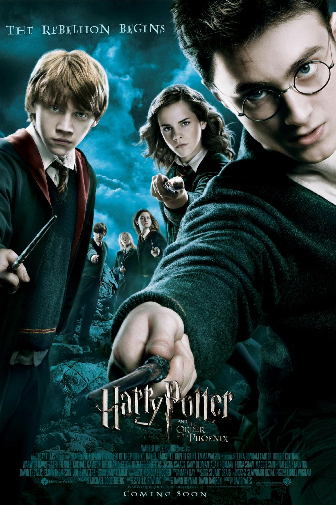

Harry Potter and the Order of the Phoenix
Harry Potter and the Order of the Phoenix is a 2007 fantasy film directed by David Yates from a screenplay by Michael Goldenberg, based on the 2003 novel of the same name by J. K. Rowling. It is the sequel to Harry Potter and the Goblet of Fire (2005) and the fifth instalment in the Harry Potter film series. The film stars Daniel Radcliffe as Harry Potter, alongside Rupert Grint and Emma Watson as Harry's best friends Ron Weasley and Hermione Granger. Its story follows Harry's fifth year at Hogwarts School of Witchcraft and Wizardry as the Ministry of Magic is in denial of Lord Voldemort's return.

PLOT
While staying at the Dursleys', Harry Potter and Dudley are attacked by Dementors. Harry repels them using a Patronus spell. The Ministry of Magic detects the underaged Harry using magic and expels him from Hogwarts, though he is later exonerate
The Order of the Phoenix, a secret organisation, founded by Albus Dumbledore, informs Harry that the Ministry of Magic is oblivious to Lord Voldemort's return. At the Order's headquarters, Harry's godfather, Sirius Black, mentions that Voldemort seeks an object he previously lacked; Harry believes it to be a weapon.
Minister for Magic Cornelius Fudge has appointed Dolores Umbridge as Hogwarts new Defence Against the Dark Arts professor. Umbridge's refusal to teach defensive spells causes her and Harry to clash. Harry is forced to write lines for "lying" about Voldemort. A magic quill etches the words into his hand as he writes. Ron and Hermione are outraged, but Harry refuses to tell Dumbledore, who has distanced himself from Harry. As Umbridge gains more control over the school, Ron and Hermione help Harry form "Dumbledore's Army", a secret group to teach students defensive spells. Umbridge recruits Slytherins for an Inquisitorial Squad to spy on the other students. Meanwhile, Harry and Cho Chang develop romantic feelings for each other.
One night, Harry envisions Arthur Weasley being attacked at the Ministry, seeing it from the attacker's perspective. Concerned that Voldemort will exploit this connection to Harry, Dumbledore has Severus Snape teach Harry Occlumency to defend his mind from Voldemort's influence. During a lesson, Harry sees Snape's memories of how his father, James, bullied and tormented Snape in school. The connection between Harry and Voldemort further isolates Harry from his friends. Meanwhile, Bellatrix Lestrange, Sirius's deranged Death Eater cousin, escapes Azkaban prison along with nine other Death Eaters. At Hogwarts, Umbridge and her Inquisitorial Squad expose Dumbledore's Army. Dumbledore, falsely accused of forming it, escapes as Fudge orders his arrest. Harry believes Cho betrayed Dumbledore's Army to Umbridge, ending their budding relationship. Umbridge becomes the new Headmistress
Harry experiences a vision that Voldemort is torturing Sirius. Harry, Ron, and Hermione rush to Umbridge's office to alert the Order via the Floo Network. Umbridge catches them and, as she is about to severely punish Harry, Hermione claims Dumbledore has hidden a "secret weapon" in the Forbidden Forest. She and Harry lead Umbridge to where Hagrid's giant half-brother, Grawp is kept. The centaurs confront them and kidnap Umbridge after she insults and attacks them. Harry, Hermione, Ron, Luna, Neville and Ginny fly to the Ministry of Magic on Thestrals to save Sirius
Voldemort appears, but moments before he can kill Harry, Dumbledore arrives. A violent duel erupts, destroying much of the Atrium, while Bellatrix escapes. The two wizards are evenly matched, so Voldemort possesses Harry's body, wanting Dumbledore to sacrifice him. The love Harry feels for his friends and family quickly drives out Voldemort. Ministry officials arrive before Voldemort disapparates; Fudge admits that Voldemort has returned and resigns in disgrace. Umbridge is dismissed and Dumbledore returns as Hogwarts headmaster. Dumbledore explains he had distanced himself from Harry to prevent Voldemort exploiting their connection. He also reveals the prophecy. As he grieves Sirius's death, Harry tries coming to terms with the prophecy: "Neither can live while the other survives."
CAST
•Harry Potter
•Ron Weasley
•Hermione Granger
•Neville Longbottom
•Professor Albus Dumbledore
• Professor Minerva McGonagall
•Petunia Dursley
•Vernon Dursley
• Oliver Wood
• Professor Quirrell
• Professor Severus Snape
•Argus Filch
• the Weasley twins
• Mrs. Norris
•the dumpy Herbology teacher
•Head of Hufflepuff House Professor Sprout
• Professor Flitwick
• Charms teacher
• Professor Binns
•sirius black
• Vernon Dursley
• Draco Malfoy
FILMING
Filming of aerial and backdrop shots took place at Glen Etive, Scotland

Westminster is a London Underground station in the City of Westminster. It is served by the Circle, District and Jubilee lines. On the Circle and District lines, the station is between St James's Park and Embankment, and on the Jubilee line it is between Green Park and Waterloo